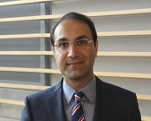

Members

Mehran Ebrahimi, PhDAssistant Professor
Faculty of Science, UOIT
Education
Postdoctoral Fellowship , Dept. of Medical Biophysics , University of Toronto , Imaging Research, Sunnybrook Health Sciences Centre (2008-2013)
PhD, Department of Applied Mathematics , University of Waterloo , Waterloo, Ontario, Canada (2003-2008)
Awards
Canadian Breast Cancer Foundation (CBCF) Postdoctoral Fellowship (2010-2013)
NSERC Postdoctoral Fellowship (2009-2010)
Graduate Students
• Mia Carmela Mojica (PhD student, to start in September 2016), MSc graduate in Applied Mathematics from the Philippines.
• Lorraine Ma (MSc student, Sept. 2014 to present), Lorraine is investigating image registration schemes for Cardiac MRI for which the data is provided by Prof. Graham Wright (Sunnybrook Research Institute). Lorraine won the people’s choice award at the 2016 Three Minute Thesis (3MT®). She is aiming to defend her thesis in August 2015 and join the University of Auckland, New Zealand, as an exchange student in Fall 2016 on a Queen Elizabeth II Diamond Jubilee Scholarship.
• Ghazal Ahmadian (MSc student, January 2015 to present), Co-supervised with Dr. Sean Bohun. Ghazal is investigating breast image registration schemes aimed at Computer aided surgery (CAS), for which the data is provided by Dr. Anne Martel (Sunnybrook Research Institute).
• Sancgeetha Kulaseharan (MSc student, September 2015 to present), Co-supervised with Dr. Elysa Widjaja (Hospital for Sick Children, Toronto), Working on combined texture and morphometric analyses of MR imaging to identify focal cortical dysplasia in children with focal epilepsy.
• Cory Falconer (MSc student, September 2015 to present), Co-supervised with Dr. Sean Bohn, Cory is investigating resolution enhancement and denoising techniques for medical imaging applications.
Undergraduate Research Students
• Eric NG (NSERC USRA, May-August 2015). Eric's research on Joint Motion Estimation and Super-resolution has resulted to a few publications. He will start working on his undergraduate thesis in 2016-2017 under my supervision.
• Queenie Leung (Undergraduate Thesis Student in Applied and Industrial Math, UOIT, Sept 2015 to April 2016). After completing her NSERC USRA, she completed her thesis on Image Segmentation using Graph cuts.
• Xu Han (MITACS Globalink Research Intern, June-August 2015) Visiting from Biomedical Engineering Program, Huazhong University of Science and Technology, Wuhan, China, Project: Registration of Breast MR Images
• Saurabh Agarwal (MITACS Globalink Research Intern, June-August 2015) Visiting from School of Electronics Engineering, VIT, Chennai, India Project: Segmentation of Breast MR Images